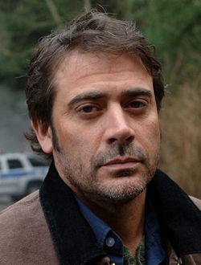

John Winchester é um personagem crucial na série *Supernatural*, sendo o pai dos protagonistas Sam e Dean Winchester. Ele se dedicou à caça de criaturas sobrenaturais após a trágica morte de sua esposa, Mary Winchester, em um incêndio causado por uma entidade sobrenatural. Esta tragédia o levou a uma vida de constante luta contra o mal, para proteger seus filhos e outros inocentes.
John é uma figura complexa, um pai dedicado, mas também um homem implacável quando se trata de eliminar ameaças sobrenaturais. Sua decisão de criar seus filhos na estrada, treinando-os para caçar desde pequenos, gera uma relação difícil, mas profunda com seus filhos. Durante a série, ele aparece em momentos cruciais e é revelado como uma peça fundamental na luta contra forças demoníacas e o destino de seus filhos. Sua missão sempre foi proteger seus filhos de forças além de seu controle, mesmo que suas escolhas nem sempre tenham sido as melhores.
John Winchester
História de Origem
Habilidades e Características
- Grande experiência em caçar criaturas sobrenaturais
- Conhecimento profundo sobre o oculto
- Habilidade de combate e sobrevivência
- Capacidade de liderança e estratégias de combate
Relações
- Dean Winchester - filho
- Sam Winchester - filho
- Mary Winchester - esposa (falecida)
- Mary Winchester (como espírito) - vínculo emocional profundo